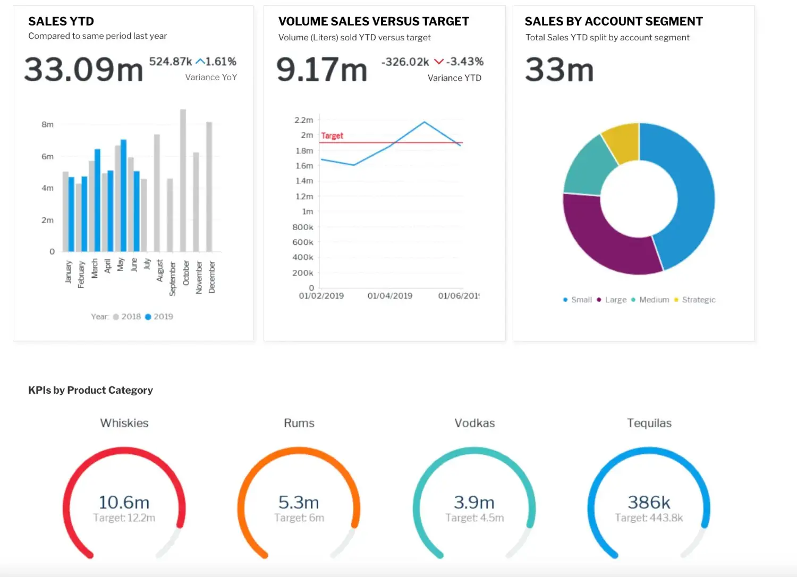
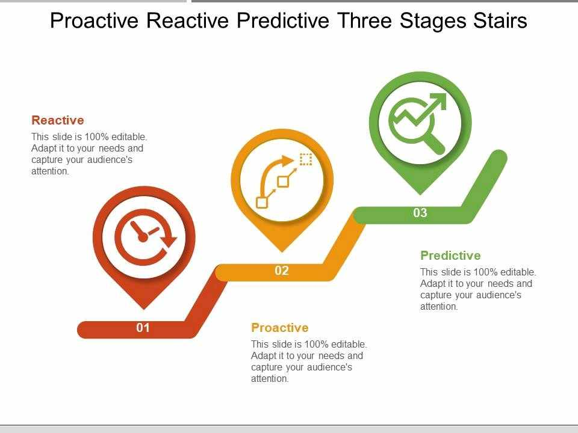
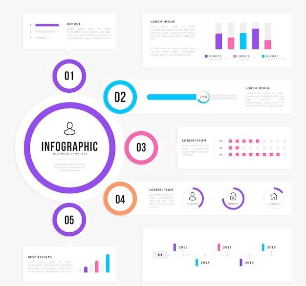

Data Strategy & Consulting
We help you define a clear data strategy aligned with your business goals, ensuring data governance, quality, and scalability.
Explore the full range of data analytics solutions we offer to help your business thrive.
We help you define a clear data strategy aligned with your business goals, ensuring data governance, quality, and scalability.

Interactive dashboards that turn raw data into actionable insights, enabling smarter decisions across your organization.

Use advanced models to forecast trends, identify risks, and uncover opportunities before they happen.

We transform complex data into compelling visuals that communicate insights clearly and persuasively.